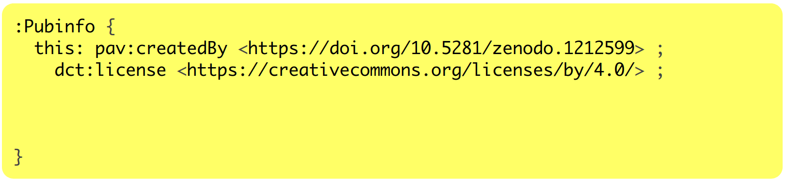
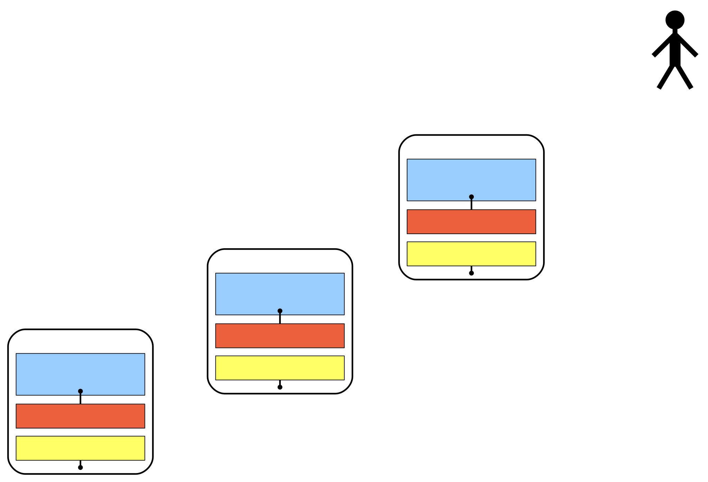
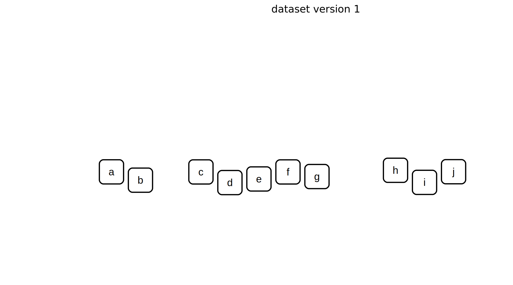
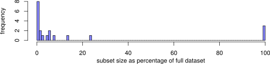
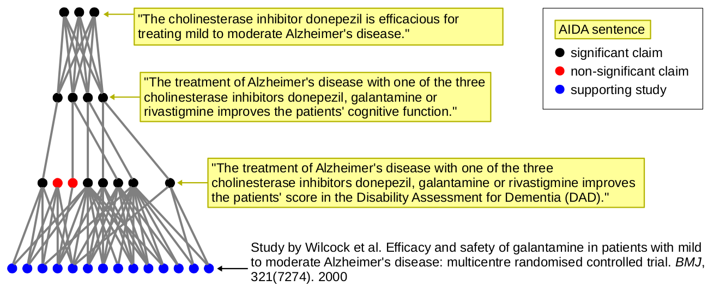

Semantic Publishing with Nanopublications
Tobias Kuhn
VU University Amsterdam
http://www.tkuhn.org
ifi Colloquium at UZH, Zurich, 16 May 2019
These slides: https://tinyurl.com/ifi-sempub
Global Knowledge Communication Crisis

Global Knowledge Communication Crisis

Global Knowledge Communication Crisis

Automatic Text Mining is Not Good Enough
BioCreative VI Challenge and Workshop 2017, Task 4 on mining protein–protein interactions:

Manual Text Mining is Slow and Expensive
Around 50 biocurators employed just to feed a few European protein databases:

"Text mining? ... Why bury it first and then mine it again?" (Barend Mons)

We Need a New Paradigm for Scientific Publishing

We Need a New Paradigm for Scientific Publishing

Nanopublications

Nanopublication Example
(from Ecology)

Nanopublication Example:
Assertion

Nanopublication Example:
Assertion
Nanopublication Example:
Assertion

Nanopublication Example:
Assertion

Nanopublication Example:
Assertion

Nanopublication Example:
Assertion

Nanopublication Example:
Assertion
Nanopublication Example:
Assertion

Nanopublication Example:
Assertion

Nanopublication Example:
Provenance

Nanopublication Example:
Provenance

Nanopublication Example:
Provenance

Nanopublication Example:
Publication Info

Nanopublication Example:
Publication Info

Nanopublication Example:
Publication Info

Nanopublication Example:
Publication Info

Nanopublication Example:
Publication Info

Nanopublication Example
Nanopublication Example

Trusty URIs make resources ...

Trusty Nanopublications
Trusty Nanopublications
Trusty Nanopublications
Trusty Nanopublications

A Server Network for Nanopublications

More than 10 Million Nanopublications on Decentralized Server Network


Nanopublication Datasets
So far mostly from the Life Sciences:
- DrugBank/Bio2RDF
- Global Biotic Interactions (GloBI)
- OpenBEL
- Human Protein Atlas
- neXtProt subset
- GeneRIF/AIDA
- DisGeNET
- WikiPathways
- Linked Drug-Drug Interactions (LIDDI)
- ...
Dealing with Nanopublications...

Indexes and Versioning
Indexes and Versioning

Indexes and Versioning

Indexes and Versioning

Indexes and Versioning

Nanopublication Overhead Becomes Advantage for Evolving Datasets
Nanopublication Overhead Becomes Advantage for Evolving Datasets

Citing Subsets in Papers
20 Publications that Used DisGeNET:
We can now cite these subsets:
"... we used DisGeNET data about these diseases [27]"
[27] Nanopublications from DisGeNET v4.0.0.0 about umls:C0003507 or umls:C1956346. http://purl.org/np/RAcf4tihZLL_aK81hwThIrNxjOhks4sEloBStEgzyR1tI, 11 May 2017.

Adoption by major funders and publishers
Mark Wilkinson, et al. The FAIR Guiding Principles for scientific data management and stewardship. Scientific Data, 3:16001, 2016.
FAIR is Very Ambitious
- "I1: (meta)data use a formal, accessible, shared, and broadly applicable language for knowledge representation."
- But FAIR is "aspirational" and supposed to be achieved gradually over time in smaller steps
FAIR Principles as Nanopublications

FAIR Principles as Nanopublications

Expressing Scientific Findings with AIDA
- AIDA is a Controlled Natural Language
- Focussing on expressivity (rather than precision like ACE)
- English sentences that are Atomic, Independent, Declarative, and Absolute
AIDA Sentence: Definition
- Atomic: a sentence describing one thought that cannot be further broken down in a practical way
- Independent: a sentence that can stand on its own, without external references like "this effect" or "we"
- Declarative: a complete sentence ending with a full stop that could be true or false
- Absolute: a sentence describing the core of a claim ignoring the (un)certainty about its truth and ignoring how it was discovered (without "probably" or "evaluation showed that")
AIDA Sentences: Examples
"A combination of system and searcher biases lead search engine users to settle on the incorrect answer to yes/no-questions around half of the time."
(from 10.1145/2484028.2484053)
"Teenagers reply on average faster to emails than adults.''
(from 10.1145/2736277.2741130)
Linking AIDA Sentences

Informal, Semi-formal, Formal

Linking Informal, Semi-formal, and Formal Statements

Case Study: Meta-Review on Alzheimer's
Can Scientists Write AIDA Sentences?
Questionnaire-style user study:
- 16 participants: Scientists with strong background in biology and/or medicine
- Five short texts (one or two sentences) from conclusion sections of structured abstracts of PubMed articles
- Task: Rewrite each short text as one or more AIDA sentences
Most Sentences Were Perfectly Accurate and AIDA-Compliant
Are AIDA Sentences Helpful for Readers?
Students found AIDA sentences to be helpful to understand the content of papers: